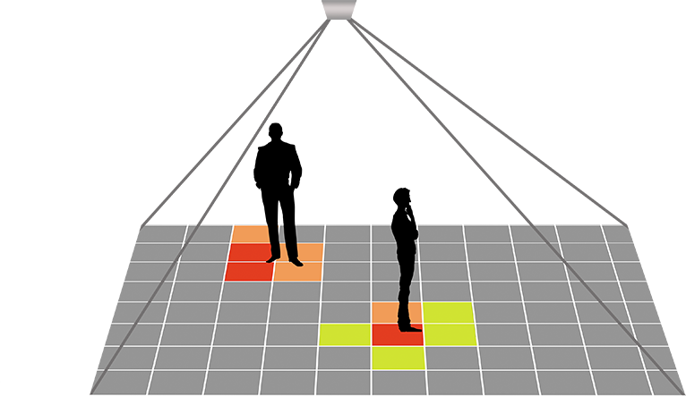

Zlicznie osób
Ilość klientów to najważniejszy czynnik decydujący o wielkości sprzedaży.
Dzięki danym dostępnym na platformie Synati określisz współczynnik konwersji i osiągniesz lepsze wyniki sprzedażowe.
Zbadasz efektywność promocji, a także sprawdzisz atrakcyjność konkretnej lokalizacji sklepu.
Zliczanie klientów pozwoli lepiej dostosować godziny pracy i zminejszyć obłożenie pracowników.
W ofercie posiadamy zarówno przewodowe jak i bezprzewdowe liczniki klientów i osób.
Skontaktuj się z nami po więcej informacji!
- rejestrujemy i zliczamy osoby wchodzące ora wychodzące
- generujemy przyjazne raporty
- pomagamy w obliczeniu konwersji
Mapy cieplne
Zastanawiasz się, które produkty najbardziej przyciągają uwagę klientów w Twoim sklepie?
Dzięki naszej kamerze termowizyjnej do analizy ruchu poznasz zwyczaje zakupowe klientów i najbardziej uczęszczane alejki.
Zweryfikujesz także zachowanie pojedyńczego klienta przy przysłowiowej "półce" oraz sprwdzisz co najbardziej przyciąga jego uwagę.
Mapy cieplne w sklepach oznaczą "gorące" i "zimne" strefy lokalu ułatwią odpowiednie zatowarowanie i ułożenie asortymentu.
Kamery termowizyjne do analizy ruchu sklepowego pozwalają również na sprawdzenie efektywności promocji i pokażą, gdzie i kiedy warto stawiać materiały reklamowe.
- rejestrujemy i analizujemy najczęściej odwiedzane strefy
- pomagamy w określaniu ścieżk zakupowych klienta
- nasze rozwiązania nie rejestrują twarzy, ale pozwalają na zliczanie klientów
